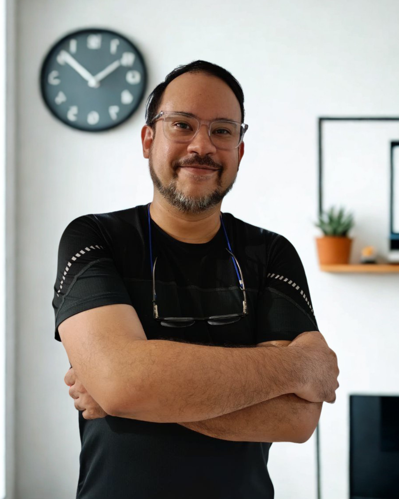

No soy una agencia. Soy quien se mete en tu negocio contigo.
Consultor de crecimiento con más de 7 años acompañando negocios de servicios en Colombia y mercados internacionales.
seleccionados

Mi historia
Soy Jorge, consultor de crecimiento con más de 7 años acompañando negocios en Colombia y otros países. Fui Gerente General de Nodriza Project durante 6 años y Director de Marketing de un programa de la ONU en Venezuela. Tuve mi propia empresa, así que entiendo los márgenes, los equipos y las decisiones difíciles.
Mi forma de trabajar siempre empieza igual: entender cómo gana dinero el negocio, cuánto le cuesta existir, qué oportunidades está dejando ir y cómo está entregando su servicio. Con esa claridad, el marketing deja de ser una apuesta y se convierte en una herramienta que amplifica lo que ya funciona.
Soy tu interlocutor directo en todo el proceso. Para la ejecución cuento con un equipo especializado que resuelve los problemas técnicos y operativos de cada caso, sin que tengas que gestionarlos tú.
Si buscas una agencia que publique contenido y te mande reportes bonitos, no soy tu opción. Si buscas a alguien que entienda tu negocio y construya algo que dure, hablemos.Marcas con las que he trabajado
Negocios de entretenimiento, salud, moda, turismo, bienestar y servicios creativos en Colombia, Estados Unidos, Argentina, Escocia, España y más países han pasado por este proceso.

¿Listo para empezar con el control?
La Sesión de Claridad es el primer paso. 90 minutos para entender exactamente qué está pasando en tu negocio.
Agendar mi Sesión de Claridad